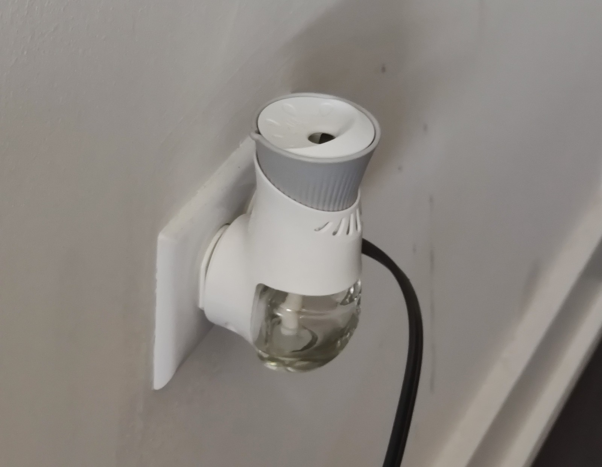
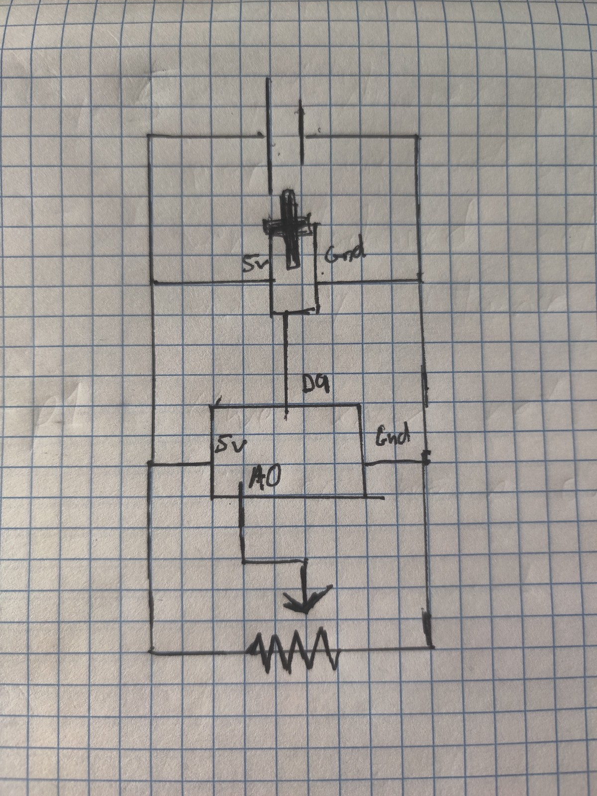
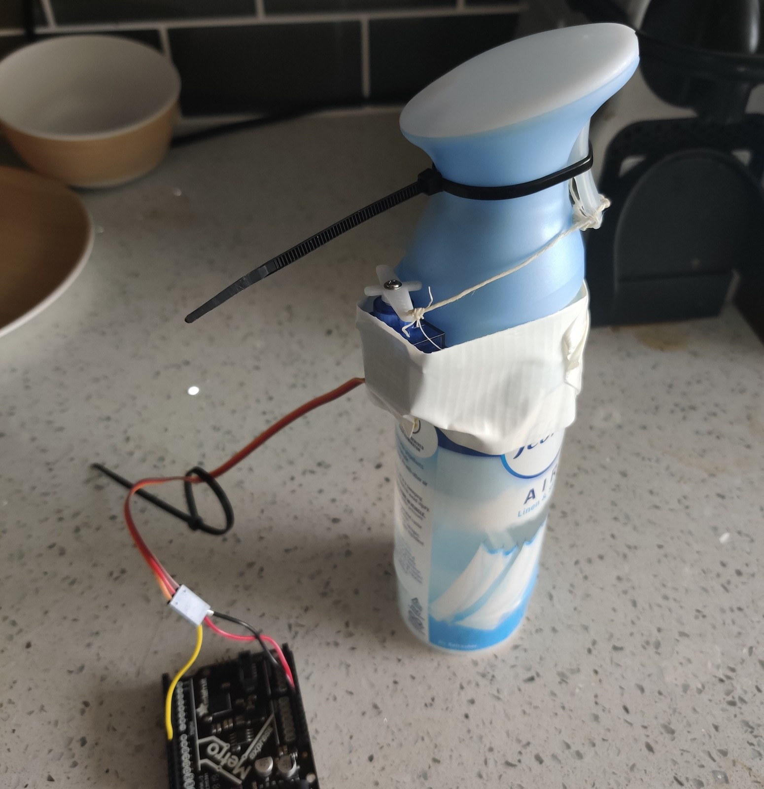

This week we focused on making a prototype of the final project. While I'm still not commited to one final project idea, I decided to make a prototype for the automatic smell generator idea. As a refresher, this idea is for a device that can detect when a movie you're watching has a specific smell (perhaps a field of flowers) and disperses that smell to create a multi-sensory viewing experience.
Because of time and material limitations, it was difficult to create something that would detect specific scenery and also offer a wide variety of smells, so I focused on creating a proof of concept by just automatically dispersing one smell. I originally thought of having a motor attached to an air freshner plugged into the wall, but those types of freshners are too slow to make an instant effect, and it was also difficult to rig it to be reliably activated by a motor (shown on the right).
Instead of using a heat air freshner, I desided to make the prototype with the air freshner spray for a more instantaneous effect. After purchasing one at CVS, I played around with a number of different motors and decided to use a servo because I only needed limited movement (pull on the trigger, and release). The circuit for this prototype was fairly simple, and involved connecting a potentiometer to analog which would map its position to the servo, which was connected to a digital pin (circuit diagram on the right). Originally I had the servo connected to +5V and the microcontroller powered by my computer, but that did not supply the servo enough power so I connected the servo to Vin and powered the microcontroller from a 6V battery pack which can supply more current.
After hooking everything up, it turned out the servo still did not have enough power to pull the trigger of the air freshner spray. To solve this, I used a zip tie to pull back on the trigger as much as possible without spraying it, allowing it to be activated with much less force. The picture of the prototype/proof-of-concept and a gif of it in action are shown below.
of it in action are shown below.
Overall the prototype functioned as intended, but presented many suboptimal features, like requiring extra strength to activate the trigger, and sometimes getting stuck and spraying freshner indefinitely instead of in one tick. For this reason I'm considering switching to an electronically activated air freshner, however that would require soldering equiptment to properly activate directly through the microcontroller or a relay.